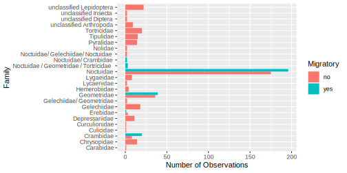
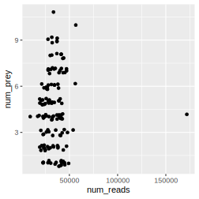

Chapter 14 Answers and solutions
14.1 Preface
Q0.1 Who is the intended audience/users/readers of Insights?
Answer: A, C, and D are correct. Insights is intended for beginner scientists in the life and environmental scientist that will be working with quantitative data. Our other book, Getting Started with R is for folk that what an introduction to R and who already know a bit about data analysis (just not in R). B: If you already have good knowledge of data analysis and statistics and need an introduction to R, you might like to look at our other book, Getting Started with R, 2nd Edition.
Q0.2 Insights teaches a newer (i.e. tidyverse) approach to using R, and not what might be called the “classic” or “traditional” approach. What does this mean?
Answer: A, B, D, and E are correct. We teach the newer (tidyverse) approach in our own Undergraduate-Level Introduction to Data Analysis courses. It works really well. The newer (tidyverse) approach is not advanced R, it is simple, intuitive, and powerful R. (Insights contains not a single square bracket or dollar sign.)
Q0.3 Insights is a book about the process of getting insights from data, and yet it contains no statistical analyses (e.g. no regression, ANOVA, linear models, or generalised linear models. Why are such things not included?
Answer: Every answers is a good reason for starting learning about data analysis without considering statistics.
Q0.4 What proportion of a data analyists time and effort is spent on tasks such as preparation, import, cleaning, tidying, checking, double-checking, manipulating, summarising and visualizating data?
Answer: We write “about 80%.” Though really we just mean a lot. Care and attention to this work is essential to provide a foundation dataset from which to derive insights.
Q0.5 From where do you get the datasets that you need to work along with the demonstrations in the book?
Answer: Only D is correct. You get the data from the online data repositories where the authors of the original studies deposited their data. Unlike the majority of “Introduction to Data Analysis” books, Insights starts from the often dirty and messy state data usual begins in (though the datasets in the Workflow Demonstrations are mostly quite clean!). Its lot of work, but absolutely essential work to do safely and reliably, to get the data tidy, clean, and arranged so that visualisation and summarisation (and in the end, statistical tests) are straightforward and efficient, and that the insights derived from them are accurate, reliable, and robust.
Q0.6 Which one of the book’s authors works at the Natural History Museum in London?
Answer: Natalie.
Q0.7 Which one used to brew beer (from grain)?
Answer: Owen.
Q0.8 Which one has has strangely hairy ears?
Answer: Andrew.
Q0.9 Which one has cuddled sheep on a remote Scottish Island?
Answer: Dylan.
14.2 Chapter 1 (Introduction)
Q1.1 Can we get insights from data without using complex statistical models and analyses, without machine learning, without being a master data scientist?
Answer: Yes, it is possible to get insights from data without all these things. And we think doing so is a great starting point to learn fundamental skills for getting insights from data. Getting insights from more complex and larger datasets than used in the book can, however, be greatly assisted by statistical models, machine learning, and many other more advanced methods.
Q1.2 What is an advantage of focusing on the data without any statistical models/tests to think about?
Answer: We will focus on important characteristics of the data and the patterns in it. We are more likely to think about the strength of and practical importance of patterns in the data. We are less likely to focus on statistical significance at the expense of everything else.
Q1.3 With what should we start our journey from data to insights?
Answer: Out of the four options given, a question is the first we should think about. The clearer and more specific the better. Making a clear and specific question can be assisted by sketching a graph. We must be careful to minimise the possibility for our insights to be affected by what we would like to find.
Q1.4 Why is it important to know if a study resulting in a dataset was a randomised manipulative experiment?
Answer: With a randomised manipulative experiment we have a chance of inferring causation… that changing somethings caused a change in something else. On the down side, logistical constraints of make such experiments occur in rather controlled and less realistic settings than other types of studies.
Q1.5 Datasets, i.e. convenient arrangements of data, come in many forms. Which arrangement is used throughout this book?
Answer: We focus on rectangular data, i.e. a table of data with rows and columns. A spreadsheet is an example of such rectangular data. We focus on this as it is a simple, useful, and flexible way of arranging data. Furthermore, there are many convenient and powerful approaches for working with data thus arranged.
Q1.6 What is a “response variable” and what are other names for one?
Answer: A response variable contains the data (measurements/observations) that we are interested in understand the variation in. This is the variable that is “responding” to other variables. It is also know as the dependent variable. Typically we put the response variable on the y-axis of a graph (i.e. we map variation in the response variable to variation along the y-axis).
Q1.7 What is an “explanatory variable” and what are other names for one?
Answer: An explanatory variable is a variable that contains measurements that can explain variation in a response variable. They are also termed the independent variable and the predictor variable. The rationale for these names is that an explanatory variable is not dependent on other variables, and can be used to predict variation in the response variable.
Q1.8 Give five important features of datasets, and explain in your own words why they are important.
Answer: The five given in Insights are 1) the number of observations, 2) the number of variables, 3) if variables describe the manipulations of a randomised experiment, 4) correlation among the variatbles, and 5) how independent are the observations. See the text of the book for why we think these are important. Great if you have thought of other important features… drop us a line to let us know.
Q1.9 What do each of the four demonstration datasets used in the Workflow Demonstrations share in common?
Answer: They all concern food!
Q1.10 Which step in getting insights from data was missing from the presented workflow? (This is a bit of a trick question.)
Answer: Perhaps lots were missing, and some of the presented steps could be broken up into multiple steps. Its always risky to present a general recipe for something as ultimately diverse as getting insights from data. Still, its a good idea to start somewhere. The missing step mentioned was communication, by the way. Or at least that is one that we thought of as rather important.
14.3 Chapter 2 (Getting Acquainted)
Q2.1 True or false: R and RStudio are the same software program?
Answer: This is false. They are two separate programs. RStudio is like a helper program that surrounds R. We only use R via RStudio. Because they’re separate programs we must update each. I.e. updating one will not update the other.
Q2.2 What will R tell us if we type into the Console 1 + 3 * 3?
Answer: The answer is 10. R does the multiplication first, as it should.
Q2.3 What will R tell us if we type into the Console log(100)?
Answer: The answer is 4.60517. This is because the log function is the natural log, often written as “ln.” If you answered 2 you were thinking of log10(100)
Q2.5 How would we assign to the name “my_constant” the value of “log(100)?”
Answer: my_constant <- log(100)
Q2.5 What commands should we be typing directly into the Console?
Answer: Any that we know that we don’t want to remember and don’t want to use again. I.e. very few. The vast majority we type in our script, and then “send” to the Console. This practice will result in our script containing a complete record of everything we did.
Q2.6 What is the error in the code?
Answer: In the second line of code the name my_x_variable was mispelled (the second “a” was missing). Hence we get the error: object 'my_x_variable' not found.
Q2.7 When we give a function some arguments, when should we name the arguments?
Answer: Name them whenever you are not sure about what order the function expects the arguments in. When staring with R, it can be comforting to always name the arguments, and then to relax this when one becomes more used to what individual functions expect.
Q2.8 True or false: it is good practice to have at the top of our script a command to install each of the packages we would like to use.
Answer: False. Do not do this. We only need to load the add-on package with, for example, library(dplyr). Installing packages every time you run your code is a waste of time.
Q2.9 True or false: When asking help from others it is sufficient to email them a verbal description of the problem, and a copy of the error message R gave.
Answer: False. This will rarely be enough for someone to help find the problem. Even sending the line of code that produces the error is often not sufficient. Better to send more code than less, and if possible code that works, at least up until if fails. And send sample data if the code reads in and uses data.
Q2.10 If RStudio freezes, are we going to lose all our work?
Answer: Probably not. RStudio has very likely autosaved the very latest version of our script. Just in case, attempt to copy the script from RStudio and paste it somewhere safe, before quitting and restarting RStudio.
14.4 Chapter 3 (Workflow Demonstration–Part 1)
Q3.2 What are characteristic features of tidy data?
Answer: In a tidy dataset, the same type of data is not spread across multiple columns, i.e. one variable (one type of information) only occurs in one column. A corollary is that each row contains only one observation. More information, about tidy data, and converting between tidy and not-so-tidy data is given in chapter 7 of the Insights book.
Q3.3 Write down two reasons why its a good idea to use the Projects that are available in RStudio.
Answer: Using projects makes our code more sharable, i.e. will work on someone else’s computer without changing anything in the code. Switching between projects is simple.
Q.3.4 What is the name given to this term %>% and what does it do?
Answer: The term %>% is known as the pipe. It is used to “send” the outcome of one function into another. You will get to know it well, as we use it a lot; it is described in chapter 6 of the Insights book.
Q3.5 A little trickier perhaps… which variable in the bat diet dataset is numeric but should, arguably, not be?
Answer: Bat_ID is numeric, but these are identities (i.e. names). They could just as well be words. Leaving them as numbers could allow us to do something stupid, like involving them in a calculation. Using numbers in such situation can also result in ggplot not doing what we’d like, for example would lead to a colour gradient rather than discrete colours if we mapped the numerical variable to the colour aesthetic.
Q3.6 In what type of object do we often (and in this workflow) store data in R, and what are some features of this object.
Answer: We store data in R in a tibble, which is a special type of data frame. It has rows each containing an observation, and columns containing variables.
Q3.7 We cleaned up the variable names using a string replacement functions (str_replace_all). Find the name of the add-on package that contains the rather nice function clean_names(), which can quickly and easily result in us having nice clean variable names.
Answer: The janitor add-on package contains the clean_names() function.
Q3.8 Take a look at this version of the script of this part of the Bat Diet workflow demonstration. We have added a variety of errors into the script, and your task is to find the errors and correct them.
Answer: The script without errors is here. Many of the errors were typos, and would have caused an error in R. Remember that some errors (e.g. doing multiplication rather than addition) will cause R to show an error. Avoiding making these (e.g. by writing readable code), and having checks to spot them when they occur is very important
14.5 Chapter 4 (Workflow Demonstration–Part 2)
Q4.1 Chapter 3 mostly concerned getting the data ready. Chapter 4 is mostly about getting information from the data, including answering our questions. What two add-on package are used to do this, and what is each of them useful for?
Answer: We use the dplyr package for manipulating data and making calculations based on the data (e.g. to calculate numbers observations, and mean observations), and we use the gplot2 package for visualising the data.
Q4.2 What do we mean by “sanity-checking insights?”
Answer: “Sanity-checking insights” are insights that confirm basic information about the data is as we expect it to be. The insight is that we are seeing what we expect to see. These are just as important as insights about our questions, as they give us confidence that our work with the data is reliable and accurate.
Q4.3 How many times will you accidentally type in your code = when you meant to type ==, and what is the difference?
Answer: If you’re anything like us (Owen at least) you will do this for as long as you’re coding, meaning that it happens a lot. The double equals sign is a logical operator, and asks if the things on either of it are equal or not. A single equals is a name-value pair, used to associate a value with a name.
Q4.4 Imagine we calculate the mean of a variable and the answer, to our surprise, is NA. This is a surprise because we know the variable is numeric and we were therefore expecting a number. What is a likely reason for us getting NA, and what is one way of dealing with this?
Answer: It is likely that the variable contains at least one NA, causing the calculation of the mean to fail (in the sense that the answer is NA). We can ask for the NA values to be ignored when calculating the mean with the arguement na.rm = TRUE
Q4.5 Imagine that we observe that the association between two variables seems to depend on a third variable. E.g. the effects of herbivory on plant biomass is negative in the absence of a predator, but is positive in the presence of a predator. Which of the terms might be appropriate to describe this kind of pattern?
Answer: When we observe that the association between two variables seems to depend on the value of a third variable, we essentially observing context dependence in the association. The association between the two variables depends on the context, which here is the value of the third variable. This kind of pattern is also termed an interaction between two variables. They are not acting additively/independently. And obviously the term associated is not sufficient to describe a context dependent association.
Q4.6 We made a type of graph that allowed us to see the number of observations of a variable that had particular values (i.e. the number of values that fell in a particular bin)? What is a name of this type of graph, and why is it import to look at this?
Answer: This type of graph is called a histogram or a frequency distribution. The are very useful for viewing the range of values of a variable, and which values are most common. These information are essential for drawing conclusions from the data; for example they can determine whether the mean or median is a more appropriate measure of central tendency (i.e. where the centre of the distribution lies).
Q4.7 We counted (calculated) the number of different prey species detected in the poop of each bat. What is the smallest value this number could take, and why is this important to realise?
Answer: The lowest number of different prey species detected is zero. Hence this distribution cannot include values of less than zero… it is impossible. This is important to realise because it gives us clues about what types of statistical tests we would do (though we do not do any in Insights). For example, the Poisson distribution is often used in statistical tests performed on count data.**
Q4.8 In chapter 4 (and at many other places in Insights) we leave the axes labels of the displayed graphs with relatively ugly labels. E.g. in Figure 4.9 the y-axis label is num_prey. Why don’t we make these and other labels nicer?
Answer: These are graphs meant for us to explore the data, and to assess the weight of evidence for patterns in it. So long as the axes (and other) labels are good enough for us to understand, great. There is no need, at this point, to make the graphs nicer. That can wait until we are more certain about what we will use to communicate our findings.
4.9 Did you follow and understand the second part of this chapter “A prey-centric view” of the data and questions?
Answer: If you answered no, then no problem! It is pretty complex, with some quite involved series of R operations, and also some new concepts. So keep the task of looking through this section for a later date, when you feel like a bit of a challenge. The most important take-home message from this section is that often there are alternate ways of looking at the same data, each of which can provide additional insight.
Q4.10 The workflow demonstration presented in chapter 3 and 4 were quite linear… we did one thing, then built on it, then another building on that. What did we do in reality, while developing the workflow demonstration?
Answer: We worked with the data a bit, and then found something that didn’t work so well, and so then went back and made a change to code so that it worked better. There was quite a lot of this optimisation. Though we were always aware of and focused on where we wanted to get to (i.e. the graphs we were aiming for that would answer our question) we did not from the start see the linear path to that goal. We went down some dead-ends, or at least some rather messy paths, and once we recognised that we had, we went back and changed direction to be more direct, elegant, robust, and reliable. Many of these changes were to prevent problems from ever occuring, as this is preferable to fixing a problem once it has occured.
14.6 Chapter 5 (Dealing with data 1—Digging into dplyr)
14.6.1 General questions and exercises
Q5.1 What dplyr function (i.e. function from the dplyr add-on package) do we use to calculate summary information about data?
Answer: summarise
Q5.2 What dplyr function do we use to keep a collection of rows/observations in a dataset, according to the values in one of the variables?
Answer: The filter function is used to keep a set of rows, according to values in a variable. E.g. keep the rows/observations for male bats:
bats %>%
filter(Sex == "Male")Q5.3 What is %in% used for?
Answer: It is used to ask if a value (e.g., Owen) appears in a list of other values. E.g. try guessing what these will do, and then run them to check your guess:
"Owen" %in% c("Owen", "Natalie", "Dylan", "Andrew")
c("Owen", "Heath") %in% c("Owen", "Natalie", "Dylan", "Andrew")Q5.4 What What dplyr function do we use to add a new variable to a dataset that is a transformation of an existing variable?
Answer: mutate – for example, it the book we used mutate to replace the “M” with “Male,” and “F” with “Female.”
Q5.5 List four other dplyr functions and write about what they’re used for.
Answer: arrange, select, rename, group_by, and summarise. Please see the book for descriptions of what these do (or search online).
14.6.2 Bat diet workflow questions and exercises
Q5.6 Find the identity (Bat_ID) of the two bats that ate only the largest (52.5mm wingspan) type of prey.
Answer:
bats %>%
filter(Wingspan_mm == 52.5) %>%
select(Bat_ID)## # A tibble: 2 x 1
## Bat_ID
## <dbl>
## 1 367
## 2 1706Q5.7 How many different prey species were detected in total?
Calculate the total number of prey species by counting the number of unique values in the prey Species variable:
Answer:
bats %>%
summarise(total_num_prey_species = length(unique(Species)))## # A tibble: 1 x 1
## total_num_prey_species
## <int>
## 1 115Q5.8 The following code is intended to calculate the number of prey items found in each poop. Find and correct the three intentional errors it contains:
prey_stats < bats %>%
group_by(Bat_Id) %>%
summarise(num_prey = n()Answer: The assignment arrow was missing its -, the d of Bat_Id should be capital D, and an additional closing bracket was needed at the end of the third line:
prey_stats <- bats %>%
group_by(Bat_ID) %>%
summarise(num_prey = n())Q5.9 Calculate the number of times each prey item was observed.
Answer:
num_times <- bats %>%
group_by(Species) %>%
summarise(num_times_obs = n())## `summarise()` ungrouping output (override with `.groups` argument)Q5.10 Calculate number of migratory and non-migratory prey species, and pest or non-pest, and each combination of migratory and pest.
Answers:
bats %>%
group_by(Migratory) %>%
summarise(total_num_prey_species = length(unique(Species)))## `summarise()` ungrouping output (override with `.groups` argument)## # A tibble: 2 x 2
## Migratory total_num_prey_species
## <chr> <int>
## 1 no 94
## 2 yes 21bats %>%
group_by(Pest) %>%
summarise(total_num_prey_species = length(unique(Species)))## `summarise()` ungrouping output (override with `.groups` argument)## # A tibble: 2 x 2
## Pest total_num_prey_species
## <chr> <int>
## 1 no 86
## 2 yes 29bats %>%
group_by(Migratory, Pest) %>%
summarise(total_num_prey_species = length(unique(Species)))## `summarise()` regrouping output by 'Migratory' (override with `.groups` argument)## # A tibble: 4 x 3
## Migratory Pest total_num_prey_species
## <chr> <chr> <int>
## 1 no no 78
## 2 no yes 16
## 3 yes no 8
## 4 yes yes 13Q5.11 What was the maximum number of times a prey species could have been observed?
Answer: This is the number of bat poops observed (143):
bats %>%
pull(Bat_ID) %>%
unique() %>%
length()## [1] 143Q5.12 What proportion of prey species were observed in only one poo?
Answer:
num_times %>%
summarise(prop_singletons = sum(num_times_obs == 1) / n())## # A tibble: 1 x 1
## prop_singletons
## <dbl>
## 1 0.461Q5.13 How many bats were caught on each of the dates?
Answer: Get the number of bats caught on each date with a group_by with Bat_ID and Date_proper as the grouping variables. Pipe the result into a summarise to get the unique Bat_IDs, then make another group_by but this time on the Date_proper variable only and use the n() function to count the number of bats per date:
bats_per_date <- bats %>%
group_by(Bat_ID, Date_proper) %>%
summarise(Unique_Bat_ID = unique(Bat_ID)) %>%
group_by(Date_proper) %>%
summarise(Number = n())## `summarise()` regrouping output by 'Bat_ID' (override with `.groups` argument)## `summarise()` ungrouping output (override with `.groups` argument)Here is a graph of number of bats caught on each date:
bats_per_date %>%
ggplot() +
geom_point(aes(x = Date_proper, y = Number)) +
ggtitle("Number of bats caught on each date.")Q5.14 The Abstract of the paper states that Lepidoptera were mostly from the Noctuidae and Geometridae familes. How many species of Noctuidae and Geometridae are there in the dataset? Get the number of species of Noctuidae and Geometridae in the dataset.
# Solution
families <- bats %>%
select(Species, Order, Family) %>%
distinct() %>%
group_by(Order, Family) %>%
summarize(num_spp=n())
families %>%
filter(Family %in% c("Noctuidae", "Geometridae"))Q5.15 The paper states that 56.9±36.7% were migratory moth species. Calculate this yourself.
Answer: In this solution we calculate the proportion migratory in the diet of each bat, then calculate the mean and standard deviation of these proportions. The answer we find is not the same as in the paper, though we are not sure why.
bats %>%
group_by(Bat_ID, Migratory) %>%
summarise(num_prey=n()) %>%
spread(key=Migratory, value=num_prey) %>%
mutate(no=ifelse(is.na(no), 0, no),
yes=ifelse(is.na(yes), 0, yes),
perc_migratory=yes/(yes+no)) %>%
ungroup() %>%
summarise(mean(perc_migratory),
sd(perc_migratory))Q5.16 Confirm the results from the paper: Moths (Lepidoptera; mainly Noctuidae and Geometridae) were by far the most frequently recorded prey, occurring in nearly all samples and accounting for 96 out of 115 prey taxa.
bats %>%
select(Species, Order) %>%
distinct() %>%
group_by(Order) %>%
summarize(num_spp=n())Q5.17 Confirm the results from the paper: Each pellet [poo] contained on average 4.1 ± 2.2 prey items
bats %>%
group_by(Bat_ID) %>%
summarise(num_prey=n()) %>%
summarise(mean(num_prey),
sd(num_prey))A slightly different answer to that in the paper. We are not sure why.
14.7 Chapter 6 (Dealing with data 2—Expanding your toolkit)
14.7.1 General questions and exercises
Q6.1 Describe in your own words a couple of reasons why piping (using %>%) is useful.
Answer: Here are a couple. You may have others too. Pipes allow us to avoid making intermediate datasets that we have no direct use for. These create clutter, which isn’t a big deal sometimes, but can get a bit distracting. Another reason is that we avoid the option of nesting functions inside functions.
Q6.2 Manipulating strings is a very important skill. In your own words, describe what the following functions do: str_replace_all, case_when, separate, and grepl (all of which are mentioned in the book).
Answer: Here in our words:
str_replace_all– replaces all occurences of one pattern in a string with another pattern.case_when– do a case by case replacement of string with other strings.grepl– report if a string does or does not contain another string.
Q6.3 In your own words describe three other string manipulation functions.
Answer: Our choice: str_sub – used to extract parts of a string, e.g. the 3rd to 6th character; str_detect – report if a pattern occurs in a string; str_length report the number of characters in a string.
Q6.4 We can use the function dmonths(1) to get the duration of one month, according to R. In which case we see that the duration is 2629800s (~4.35 weeks). What does this mean about how lubridate calculates this duration of a month?
Answer: 365.25 days / 12 months * 24 hours * 60 minutes * 60 seconds = 2629800 seconds. So dmonths(1) calculates the duration of a month as the average duration of a month in an average duration year (365.25 days, due to leaps years every four years). The implication is that we must be very careful if we want to use the duration of a specific month in our calculations.
Q6.5 Working with dates and times can be rather tricky and painful. What add-on package do we recommend for working with dates and times, because it contains many very useful and simple-to-use functions?
Answer: We recommend the add-on package lubridate for working with dates and times.
Q6.6 What would the function ymd be useful for?
Answer: The function ymd is used to convert strings that contain year, then month, then day (e.g. 2020-11-03) into date format.
Q6.7 Why is it useful to convert strings containing dates and times into date and time formatted variables?
Answer: Once converted, we can do maths with these (e.g. calculate the amount of time between two date/times). Also, when we use ggplot to visualise data with a date-formatted variable, we will get dates displayed properly and nicely in the graph.
Q6.8 In your own words write down what the pivot_longer function is used for, and also the three arguments (and their meanings) that we usually give it.
Answer: pivot_longer is used to take information that is spread across multiple columns and put it into one (long) column. I.e. it is used to convert data from wide to long format. Long format is often quite a tidy format, and is therefore efficient for processing with functions in the dplyr and ggplot2 add-on packages. The three arguments we usually give it are:
names_to– the name of the new column in the new dataset that will contain the names of the variables in the old dataset.values_to– the name of the new column in the new dataset that will contain the values in the variables in the old dataset.cols: the columns in the old dataset that contain the data that should be gathered into one column.
Q6.9 Look at the online Workflow Demonstration “Food-diversity Polity” and work through tidying (particularly the use of pivot_longer) the FAO Food Balance Sheet data.
Answer: no answer, just work through it.
14.7.2 Bat diet workflow questions and exercises
Q6.10 Make a pipeline of operations, just like the one in the Insights book, that will calculate the number of prey species in the poop of each bat, and the average number of prey per bat for each taxonomic Order.
Answer:
bats %>%
group_by(Bat_ID, Order) %>%
summarise(Num_prey = n()) %>%
group_by(Order) %>%
summarise(Mean_num_prey = mean(Num_prey))## `summarise()` regrouping output by 'Bat_ID' (override with `.groups` argument)## `summarise()` ungrouping output (override with `.groups` argument)## # A tibble: 7 x 2
## Order Mean_num_prey
## <chr> <dbl>
## 1 Coleoptera 1
## 2 Diptera 1.12
## 3 Hemiptera 1
## 4 Lepidoptera 4.06
## 5 Neuroptera 1.29
## # … with 2 more rowsQ6.11 Make a variable containing both the age and sex of the bats. E.g. “Adult-Female,” “Adult-Male,” and so on.
Answer: There are a number of ways to do this. A mutate and paste within that would work. In our answer we use the unite function from the tidyr add-on package…
bats <- bats %>%
unite(col = Age_Sex,
c("Age", "Sex"),
sep = "-",
remove = FALSE)Q6.12 How long did the fieldwork take, from the first sample to the last?
Answer: We used summarise to subtract the maximum value of the date variable from the minimum…
bats %>%
summarise(duration = max(Date_proper) - min(Date_proper))## # A tibble: 1 x 1
## duration
## <drtn>
## 1 453 daysIf you get an error, please ensure you used the proper date variable… it must be formatted as a date (e.g. using the dmy function from the lubridate package).
Q6.13 Change the arrangement of the bat diet data to be wide-format. That is, for each bat make there be only one row, and have a column for each of the possible prey species, with number of reads at the entry.
Answer: Use the pivot_wider function. Be careful to give all the columns that identify the rows (id_cols), the just specify which column contains the names, and which column contains the values…
bats_wide <- bats %>%
pivot_wider(id_cols = c("Bat_ID", "Age", "Sex", "Date_proper"),
names_from = "Species",
values_from = "No._Reads")Q6.14 If you have NA’s in the wide dataset you made for the answer to the previous question, figure out how to replace these with zeros. Hint: you do not need to use another function or operation.
Answer: Add the argument values_fill = 0 to the use of the pivot_longer function:
bats_wide <- bats %>%
pivot_wider(id_cols = c("Bat_ID", "Age", "Sex", "Date_proper"),
names_from = "Species",
values_from = "No._Reads",
values_fill = 0)Q6.15 How many rows will there be when we change this bats_wide dataset back to long format?
Answer: It will be the number of rows in bats_wide (143) multiplied by the number of prey species (119 columns minus the 4 id columns = 115). So we should have 16’445 rows.
Q6.16 And now switch the bats_wide dataset back to long format, and the make a new column that is a binary prey presence/absence variable.
Answer:
bats_long <- bats_wide %>%
pivot_longer(names_to = "Prey_species",
values_to = "Num_reads",
cols = 5:119) %>%
mutate(Pres_abs = ifelse(Num_reads == 0, 0, 1))Q6.17 Confirm that the number of presences is the same as in the original dataset.
Answer:
bats_long %>%
summarise(total_prey = sum(Pres_abs))## # A tibble: 1 x 1
## total_prey
## <dbl>
## 1 633Perfect… 633 is the number of rows in the original dataset (in which only presences were present).
14.8 Chapter 7 (Getting to grips with ggplot2)
14.8.1 General questions and exercises
Q7.1 What is the difference between ggplot and ggplot?
Answer:
ggplot2 is the add-on package. ggplot is one of the functions in that package. Hence we would run library(ggplot2), and then use the function ggplot to make a particular graph.
Q7.2 In the context of a graph being made with ggplot, give two examples of aesthetic mappings, and give the function we use to specify them.
Answer:
Example aesthetic mappings are 1) mapping of the colour of a point to a variable that contains levels low, medium, and high; 2) mapping of a numeric variable to the x-axis position of a point. We use the aes function to specify the aesthetic mappings.
Q7.3 In the context of ggplot2, what is a “scale?”
Answer: The scale of a ggplot2 graph controls how the data are mapped to the aesthetic attributes, such as an x/y location, or the colour and size of points in a plot. I.e. with the aesthetic mapping we specify what is mapped to what, and with a scale we specify how it is mapped.
Q7.4 In the context of ggplot2, what is a “layer?”
Answer: A layer is a set of information that we add to the graph. E.g. some points corresponding to some data. Or some lines joining data points. Or some text. Or an image. Think of layers as transparent sheets of plastic that we draw something on, and then lay onto the graph to add information.
Q7.5 In the context of ggplot2, what is a “facet?”
Answer:
A facet is a panel for subsets of data, such as a separate panel for each sex or age. We can use the facet_grid or facet_wrap function to make a graph with multiple panels (facets), each showing a subset of the data.
14.8.2 Bat diet workflow questions and exercises
Q7.6 Plot at the shape of the distribution of number of poops collected on each sampling date.
Answer:
bats %>%
ggplot() +
geom_histogram(aes(x = Date_proper))## `stat_bin()` using `bins = 30`. Pick better value
## with `binwidth`.Q7.7 Plot the distribution of number of reads. What shape is it? From looking at the distribution, predict whether the mean or median is larger. Then check your prediction by calculating the median and mean. For extra credit, add two vertical lines to the graph, one where the mean is, and one where the median is (hint, use the geom_vline function).
Answer:
bats %>%
ggplot() +
geom_histogram(aes(x = No._Reads))## `stat_bin()` using `bins = 30`. Pick better value
## with `binwidth`.Because the distribution has a few very large values, the mean will be pulled to the right (be larger), relative to the median. Lets check if we’re correct:
bats %>%
summarise(mean_num_reads = mean(No._Reads),
median_num_reads = median(No._Reads))## # A tibble: 1 x 2
## mean_num_reads median_num_reads
## <dbl> <dbl>
## 1 7700. 2741Yes, the mean is much much larger than the median.
bats %>%
ggplot() +
geom_histogram(aes(x = No._Reads)) +
geom_vline(xintercept = 7700) +
geom_vline(xintercept = 2741)## `stat_bin()` using `bins = 30`. Pick better value
## with `binwidth`.## `summarise()` regrouping output by 'Bat_ID', 'Sex' (override with `.groups` argument)Q7.8 The following code is intended to create a plot of the wingspan of prey found in male and female bat poops. Find and correct the three intentional errors it contains:
prey_stats %>%
ggplot() %>%
geom_beewarm(mapping = aes(x = Sex y = mean_wingspan))Answer:
The second pipe should be a plus sign +: we are adding a layer to the ggplot; we are not piping. This is a common error we make. There is an s missing in the geom_beeswarm. Finally, the comma that must separate the two arguments in the aes function is missing. Here is the corrected code (though it will not work if you have not already made the prey_stats object):
prey_stats %>%
ggplot() +
geom_beeswarm(mapping = aes(x = Sex, y = mean_wingspan))Q7.9 Calculate and plot a histogram of the probability of observing each of the prey species across the whole study.
Answer: The probability is the number of times observed divided by the number of times a species could have been observed:
max_poss_obs <- bats %>%
pull(Bat_ID) %>%
unique() %>%
length()
prob_obs <- bats %>%
group_by(Species) %>%
summarise(prob = n() / max_poss_obs)## `summarise()` ungrouping output (override with `.groups` argument)And the histogram:
prob_obs %>%
ggplot() +
geom_histogram(aes(x = prob))## `stat_bin()` using `bins = 30`. Pick better value
## with `binwidth`.Q7.10 Ensure that you have the odds ratio for appearing a male or female poo for each of the prey species (the odds_ratio object in the book). Plot a histogram of all the calculated odds ratios. Guess how many prey species with odds less than twice and less than half to appear in female compared to male poos. Calculate how many, and see how close is your guess. (Hint: it may be worthwhile to plot log2 of the odds ratio.)
Answer:
odds_ratios %>%
ggplot() +
geom_histogram(mapping = aes(x = Odds_ratio))## `stat_bin()` using `bins = 30`. Pick better value
## with `binwidth`.## Warning: Removed 22 rows containing non-finite values
## (stat_bin).odds_ratios %>%
ggplot() +
geom_histogram(mapping = aes(x = log2(Odds_ratio)))## `stat_bin()` using `bins = 30`. Pick better value
## with `binwidth`.## Warning: Removed 65 rows containing non-finite values
## (stat_bin).odds_ratios %>%
summarise(ans = sum(less_than_half_or_twice = abs(log2(Odds_ratio)) < 1))## # A tibble: 1 x 1
## ans
## <int>
## 1 25Q7.11 And now for a little bit of fun: Combine the script that displays a photo of a cute dog with the script that gives some praise to create a motivational poster of a dog giving praise.
Answer: Please let us know if you do this. We want to see your solutions, and will post them on Twitter (if you like)!
14.9 Chapter 8 (Making Deeper Insights: Part 1 - working with single variables)
14.9.1 General questions and exercises
Q8.1 Give an example of a continuous numeric variable and explain why it is so.
Answer: Examples of continuous variables include body mass, age, time, and temperature. They can, in principle, take any positive real value. You may also have given change in mass, which can take any (positive or negative) real value.
Q8.2 Give an example of a discrete numeric variable and explain why it is so.
Answer: Examples of discrete variables include the number of individuals in a population, number of off- spring produced , and number of individuals infected in an experiment. The can only be integers.
Q8.3 Give an example of a categorical variable, and state if it is ordinal or nominal.
Answer: Examples of ordinal categorical variables include academic grades (i.e. A, B, C), size class of a plant (i.e. small, medium, large) and measures of aggressive behaviour. Examples of nominal categorical variables include sex, business type, eye colour, habitat, religion and brand. There is no intrinsic order to the ‘levels’ of these categories.
Q8.4 Numeric variables can also be said to be measure on an interval or a ratio scale. Explain the difference and give examples of each.
Answer: We can say that one tree is twice as tall as another, or that one elephant has twice the mass of another, because length and mass are always measured on ratio scales. I.e. the ratio of two values is meaningful. Interval data still allow for the degree of difference between values, just not the ratio between them. A good example of an interval scale is date, which we measure relative to an arbitrary epoch (e.g. AD). Hence, we cannot say that 2000 AD is twice as long as 1000 AD. However, we can compare the amount of time that has passed between pairs of dates, i.e. their interval. For example, it’s perfectly reasonable to say that twice as much time has passed since the epoch in 2000 AD versus 1000 AD.
Q8.5 Explain in your own words what is meant by a “sample distribution.”
Answer: The sample distribution is a statement about the frequency with which different values occur in a particular sample. If we were to repeat the same data collection protocol more than once we should expect to end up with a different sample each time. This results purely from chance variation and the fact that we can almost never sample everything we care about.
Q8.6 What type of graph is a very good one for getting a summarising a numeric variable?
Answer: A histogram / frequency distribution. It illustrates central tendency (mean, median, mode) and spread.
Q8.7 When we make a histogram we much choose the number of bins. What is good practice when doing so?
Answer: To make a few histograms, each with different numbers of bins, and examine if this changes our conclusions about the distribution of the variable.
Q8.8 If we have rather few data points (e.g. less than 30 or so), what type of graph might we make instead of a traditional histogram?
Answer: A dot plot, in which each value is represented by a dot, and similar ones are stacked on top of each other.
Q8.9 If we have very many of data points (e.g. many thousands) what type of graph might we make instead of a traditional histogram?
Answer: A density plot, which shows the shape of the distribution as a continuous line. Here we must be careful to choose appropriately the “smoothness” of the line (and this choice is quite subjective, just as is the choice of number of bins).
Q8.10 Compare and contrast two measures of central tendency.
Answer: The mean and the median are two measures of central tendency. The sample mean is sensitive to the shape of a distribution and the presence of outliers. The sample median is less so. The median of a sample is the value separating the upper half from the lower half of the distribution.
Q8.11 Why do we advise use of the interquartile range to summarise the dispersion of a sample distribution?
Answer: It is simple to understand: it is the range that contains “the middle 50%” of a sample, which is given by the difference between the third and first quartiles. And it is not as affected by outliers as other measures of dispersion. And it is what is commonly displayed in box-and-whisker plots.
Q8.12 Moving on now to summarising categorical variables, we are more interested in how common in a sample are occurrences of each of the categories. Why does it not make much sense to calculate a median, even though R may let us do so?
Answer: There is no order for the categories, so we can’t say which is larger than another. If we can, then we can’t say which are more different than others.
14.9.2 Workflow demonstration questions and exercises
(Only one exercise in this section, since this chapter is mostly conceptual. If you feel you need more practical experience, and have worked through the bat diet workflow demonstration in the Insights book, then consider working through one or more of the online workflow demonstrations. Stop when you have explored the distribution, central tendency, and dispersion/spread of some of the numeric and categorical variables.)
Q8.13 Try to yourself, without using a to do so directly, calculate the median and interquartile range of the wingspan variable. Hint: it might be useful to sort/arrange the dataset by ascending values of the wingspan variable; and you will need to know the number of observations. Then use the quantile function to check your answer.
Answer:
bats %>%
summarise(num_obs = sum(!is.na(Wingspan_mm)))## # A tibble: 1 x 1
## num_obs
## <int>
## 1 555# 555 observations
# 25% of 555 is 139
# 50% of 555 is 278 (for the median)
# 75% of 555 is 416
bats %>%
filter(!is.na(Wingspan_mm)) %>%
arrange(Wingspan_mm) %>%
slice(c(139, 278, 416)) %>%
pull(Wingspan_mm)## [1] 29 35 39And check using a function:
bats %>% summarise(quantile = scales::percent(c(0.25, 0.5, 0.75)),
q_wing = quantile(Wingspan_mm, c(0.25, 0.5, 0.75), na.rm = TRUE))## # A tibble: 3 x 2
## quantile q_wing
## <chr> <dbl>
## 1 25% 29
## 2 50% 35
## 3 75% 3914.10 Chapter 9 (Making Deeper Insights Part 2: Relationships among (many) variables)
14.10.1 General questions and exercises
Q9.1 When examining data for an association between two numeric variables, what type of graph will likely be quite informative? And what summary statistic might we use?
Answer: We will likely learn a lot from looking at a bivariate scatterplot of the observations, with one numeric variable mapped to the x-axis and the other mapped to the y-axis. We could then calculate the correlation coefficient of the association.
Q9.2 What is a limitation of the Pearson’s correlation coefficient?
Answer: It should only be used when the associate between the two variables is relatively linear.
Q9.3 What two correlation coefficients can be used when the association is relatively non-linear?
Answer: Spearman’s and Kendall’s correlation coefficients.
Q9.4 What about those two correlation coefficients makes them appropriate for non-linear associations?
Answer: They are based on the match (or mismatch) in the ranking of the observations, rather than their values. E.g. does the smallest value in one variable associate with the smallest value in the other variable?
Q9.5 What does a correlation coefficient of 1 mean?
Answer: There is a perfect linear association between the values in the two variables (Pearson’s correlation coefficient), or perfect match in their rankings (Spearman’s and Kendall’s correlation coefficient).
Q9.6 When making a scatterplot with many data points, what do we need to be careful of, in order to not mislead about the amount of data points? And how could this be achieved?
Answer:
We need to make sure that data points that could lie on top of each other are clearly shown as multiple data points. We could, for example, make data point in the figure larger if they represent more than one observation. The geom_count function can do this. With a lot of data, we may decide to make a 2-dimensional histogram (e.g. with the geom_hex function in the hexbin package).
Q9.7 What type of graph might we make in order to examine if there is evidence of an association between two categorical variables?
Answer:
A paired bar chart, showing the number of observations in each combination of the two categorical variables would work. Here is the graph we can use for the Migratory variable and the Family variable in the bat diet dataset:
ggplot() +
geom_bar(data = bats,
mapping = aes(x = Family, fill = Migratory),
position = "dodge") + coord_flip() +
labs(x = "Family", y = "Number of Observations")
We could make the counts proportions and plot these:
ggplot(bats, aes(x = Family, fill = Migratory)) +
geom_bar(position = "fill") +
scale_y_continuous(labels = scales::percent) +
coord_flip()We can then clearly see that the proportion of migratory differs among the Families. I.e. the proportion migratory is contingent on the Family.
Q9.8 What kind of table (i.e. what name does the table have that) shows the number of cases for each combination, and therefore tells us if the number of counts is dependent on the value of both categorical variables?
Answer: A contingency table. I.e. is the number of migratory relative to non-migratory prey contingent upon the Family?
Q9.9 What types of graphs could we use to assess the evidence for an association between a categorical and numeric variable?
Answer: A box-and-whisker plot is a good choice. Or just plotting all the data points if there are not so many. We could also make multiple histograms, one for each category of the categorical variable.
Q9.10 What can we do if we would like to check for associations among three or more variables?
Answer: Graphically we can do this for three, perhaps just about four variables, by colouring points, and using facets. But it gets tricky and complex. We can make all pairwise bivariate graphs, but this does not tell us about come complexities, such as two or three way dependencies among numeric variables. The general point is that with more variables it quickly gets much harder to check for the complex associations that can occur. If you’re interested in learning some useful methods, take a look at the Lurking variables and Ordination section on this web site.
14.10.2 Workflow questions and exercises
(Only one exercise in this section, since this chapter is mostly conceptual. If you feel you need more practical experience, and have worked through the bat diet workflow demonstration in the Insights book, then consider working through one or more of the online workflow demonstrations. Stop when you have explored the relationships among some of the variables (which, in any case, will likely be the end of the workflow demonstration).)
Q9.11 Explore if there is any evidence of an associate between the total number of reads in a poop and the number of prey observed in a poop. Hint: you will first need to calculate the number of prey, if you have not already. Make sure to take care that all data points are very likely visible.
Answer:
bats %>%
group_by(Bat_ID) %>%
summarise(num_prey = length(Species),
num_reads = sum(No._Reads)) %>%
ggplot() +
geom_jitter(aes(x = num_reads, y = num_prey),
width = 0, height = 0.2)## `summarise()` ungrouping output (override with `.groups` argument)
14.11 Chapter 10 (Looking back and looking forward)
You made it to the last chapter – congratulations. In the last chapter, as well a congratulating you, we mention four next steps: code style, visual communication, statistical analysis, and reproducibility. We go into some detail about the what, why, and how of reproducibility. Even as we finish this web page and the book is in production, there are new requirements to publish our code and data alongside the insights. And, perhaps even more importantly, that the code (analysis script) is reproducible. So training about how to make reproducible analyses will become more and more important, and be part of the Open Science movement. And so, only one question for this chapter, and it is about reproducibility…
Q10.1 Which of these are good practices and bad practices for reproducible methods for getting insights from data?
- Using absolute paths to data files.
- Never editing our raw data files “by-hand.”
- Putting all our files in one folder.
- Making our code easy for others to understand, including making many useful comments.
- Use RMarkdown to make reports.
- Future-proofing your code.
Answers:
- No, use relative paths.
- Yes, if you need to alter some datapoint, do so in a transparent and recorded method, such as in code.
- No, organising files of different types (e.g. data, code, figures) in different folders will usually help others understand what we’ve been up to.
- Yes, of course make it easy for others to understand!
- Yes, use RMarkdown, as this means we don’t need to copy and paste output/graphs into a word processor document, and in doing so potentially copy the wrong thing, or forget to update the inserted graph when we should.
- Yes, we should future-proof our code. Best to use as few add-on packages as possible, and then use ones that have been around a while and are still actively maintained. If you want to really protect against changes in R and packages, look into Docker, but beware that its pretty complicated looking. It allows all software and code and data to be “containerised.” We then share the container, and not just our code and data. Probably it, or similar, will become very widespread, and hopefully much easier to use.
14.12 Polity, food diversity, and GDP challenge
Check to see if GDP or GDP per capita can explain variation in dietary diversity? What, if anything, would you imagine is the causation among political system, GDP, and dietary diversity (you might use the data to try to infer this, or just think about it)? You can get the GDP data from here: http://www.fao.org/faostat/en/#data/MK
Our solution (code only) is at the end of Answers chapter of this web site.
gdp <- read_csv("data/Macro-Statistics_Key_Indicators_E_All_Data.csv",
locale = locale(encoding = 'ISO-8859-1'))
# First fix some variable names:
names(gdp) <- str_replace_all(names(gdp), c(" " = "_"))
# Remove all non-countries
# keep only some of the elements
#gdp <- filter(gdp, Item_Code==22008 & Element_Code==6110)
gdp <- filter(gdp, Item_Code==22014 & Element_Code==6119)
gdp <- select(gdp, -Item_Code, -Area_Code,
-Element_Code, -Element, -Unit, -Item,
-ends_with("F"), -ends_with("N")) %>%
pivot_longer(names_to = "Year", values_to = "GDP", cols = 2:49) %>%
mutate(Year=as.numeric(substr(Year, 2, 5))) %>%
rename(Country=Area)
fbs_pol_all <- full_join(fbs_pol, gdp)
fbs_pol_sum <- group_by(fbs_pol_all, Country) %>%
summarise(mean_div=mean(Diversity, na.rm=TRUE),
mean_pol=mean(Polity2, na.rm=TRUE),
mean_GDP=mean(GDP, na.rm=TRUE))
ggplot() +
geom_point(data = fbs_pol_sum,
aes(x=log10(mean_GDP), y=mean_div, col=mean_pol), size=3)
ggplot() +
geom_point(data = fbs_pol_sum,
aes(x=mean_pol, y=mean_div, col=log10(mean_GDP)), size=3)
ggplot() +
geom_point(data = fbs_pol_sum,
aes(x=mean_pol, y=log10(mean_GDP), col=mean_div), size=3)